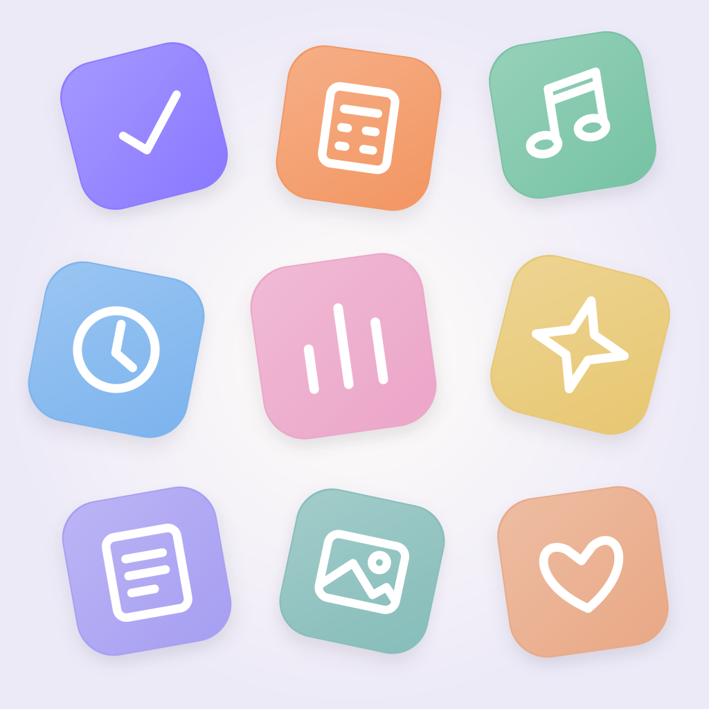

A HOME FOR YOUR IDEAS
Little apps.
Endless possibilities.
Describe an idea. Make it real.
Keep your favorite little apps,
all in Anything App.
Create useful tools, trackers, journals, calculators, and playful experiments with AI. Open them, revise them, and save them to your private library.
Three starter apps work without signing in. Creation uses Sign in with Apple, includes 10 free credits, and is for adults 18 and older. Each creation or revision uses one credit; failed generations return it. No subscriptions, purchases, ads, or analytics.
Mini apps run inside Anything App. Native features such as camera, contacts, notifications, and payments are unavailable. App source syncs to your account; data entered inside each app stays on your device.
Support
Need help, want to report inappropriate content, or have a question? Email jakejohnson3700@gmail.com. Include the app name and a short description. You can also use Report a problem while viewing a created app. Reports are reviewed as soon as possible.
To remove an app, open it and tap Delete app. To delete your account and its cloud data, open Settings → Delete account. Account deletion permanently removes your apps, prompts, jobs, and credits. You can also contact support for deletion assistance.
Privacy policy
Effective November 1, 2026. Anything App is operated by Jake Johnson.
- Account data: Sign in with Apple supplies an account identifier and email (which may be an Apple private relay). Supabase stores this information to authenticate you, keep your private app library, and manage generation credits. The app requests email only; it does not request your name.
- App creation: Your prompts, generated HTML/CSS/JavaScript, titles, revisions, generation status, declared adult status, and credits are stored in Supabase and processed by our Railway backend. Your source is private to your account.
- AI provider: With your permission, your prompt and existing source for revisions are sent to Anthropic to generate your app. This can include any personal information you put in them. Your Apple credentials are never sent to Anthropic. Avoid including secrets or sensitive personal data. You may withdraw permission in Settings; we will ask again before another generation. Anthropic processes API data under its commercial terms and retention policies, including any applicable abuse-monitoring retention.
- On-device data: Saved app source is cached per account. Each mini app has its own local storage, capped at 200 KB. Data entered inside mini apps is not synced by Anything App and may be lost if the app or device data is removed. Mini apps receive no Apple identity, account tokens, or native device permissions.
- Online assets: A created app may use HTTPS libraries, images, or online resources. Those providers receive network information such as IP addresses when the resources load. Creation instructions prohibit trackers and transmitting entered data to external services; generated output may contain mistakes. Inspect source using the code button and report problems.
- Reports and support: A submitted report includes your account ID, app reference, reason, and timestamp. Support emails include what you choose to send. These are used to investigate issues.
- Retention and deletion: Account data and cloud app source remain until you delete them or your account. Account deletion removes associated cloud records and cached app data on the device used to delete it. Temporary infrastructure backups and provider logs may remain for their limited retention periods. Support correspondence may be kept as needed to resolve requests and meet legal obligations.
- No tracking: We do not sell your data, show ads, use analytics SDKs, or track you across other companies’ apps and websites.
- Age: AI creation is for users who declare they are at least 18. We do not knowingly collect personal information from children.
Service providers: Supabase, Railway, Anthropic, and Apple. These providers process data to deliver their services under their applicable privacy and security terms.
Use responsibly
Create your own private apps. Do not use Anything App to generate abusive, exploitative, illegal, or infringing content. AI output can be wrong; do not rely on it for medical, legal, financial, or safety-critical decisions. Generated apps are web mini apps, not independently installed native apps. There is no public feed or user-to-user messaging.